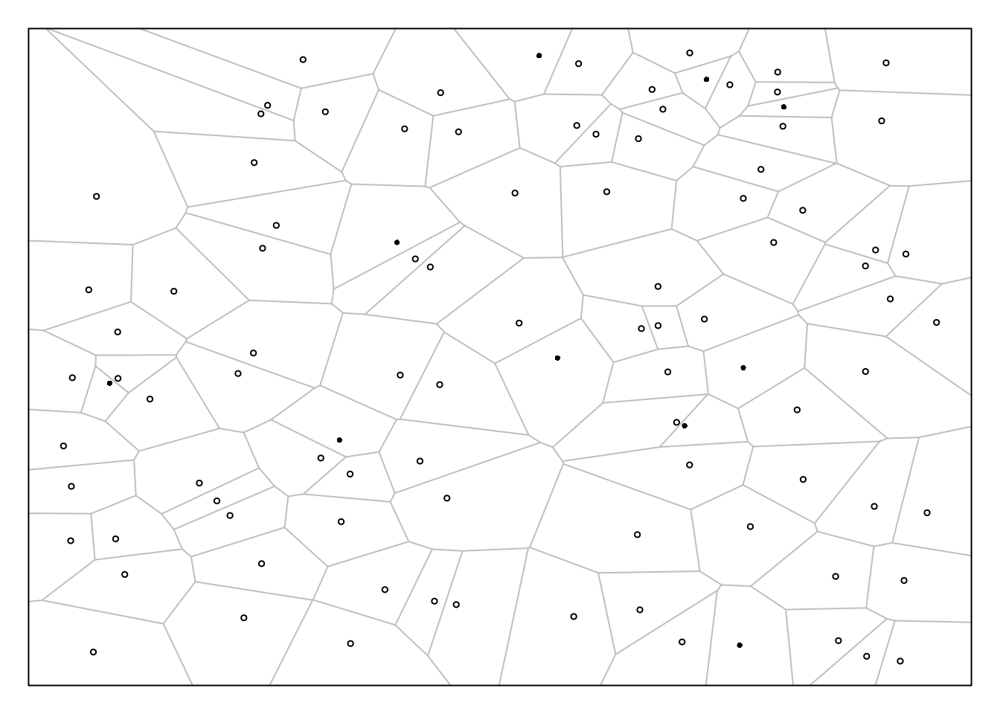
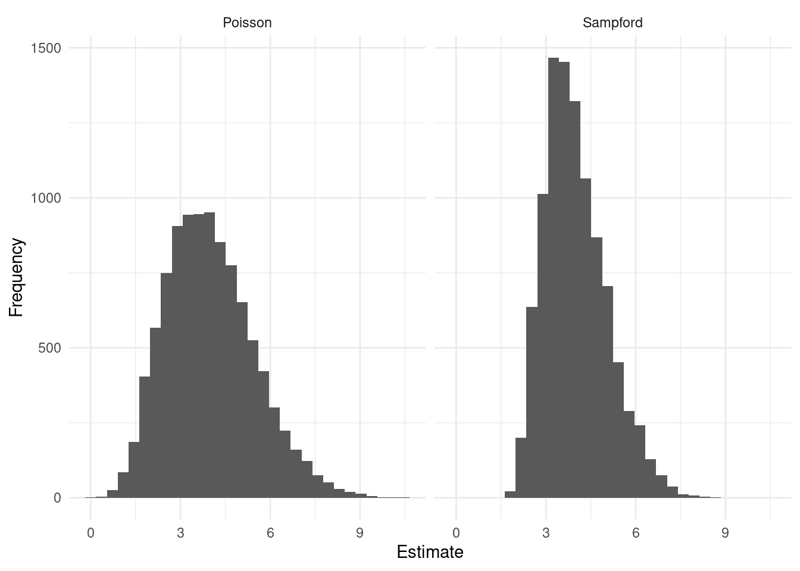
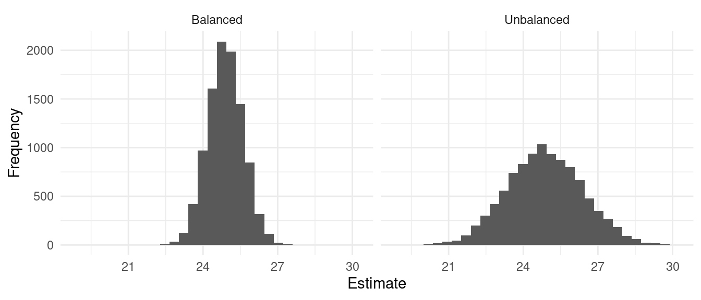
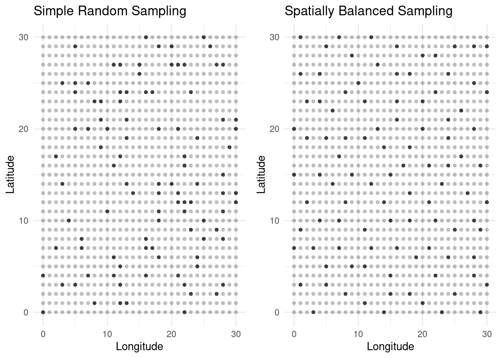

You can also download a PDF copy of this lecture.
Recall that there are a couple of ways that we can connect the sampling design with the inclusion probabilities.
Indirect approach: we specify a sampling design, which implies the inclusion probabilities of the elements.
Direct approach: we specify the inclusion probabilities and find a sampling design that has those inclusion probabilities.
Example: Suppose we have a population of objects distributed over a region with total area \(A\), and we use the following sampling design.
Select a random point within the region based on a uniform distribution (i.e., select a random \(x\) coordinate, and select a random \(y\) coordinate, both from uniform distributions).
The element that is closest to that point is included within the sample. Do this \(n\) times, sampling with replacement.

Let \(y_i\) be the value of the target variable for the \(i\)-th object, and let \(a_i\) be the area of the polygon around that object that contains all the points that would lead to the selection of that object. How would we compute an estimate of \(\tau\) or \(\mu\) using the Hansen-Hurwitz and Horvitz-Thompson estimators?Example: Suppose we have a population of elements, and for each element we decide independently with a virtual “coin flip” whether to include it in the sample. This probability could depend on an auxiliary variable \(x_i\) so that the probability is \(cx_i\) for some \(c > 0\) such that \(0 < cx_i < 1\) for all elements. This in an example of what is called Poisson sampling. A special case of Poisson sampling is Bernoulli sampling where all \(\pi_i\) are equal.
What are the first-order and second-order inclusion probabilities? What is the (expected) sample size?
Example: A variety of sampling algorithms have been developed that, given a sampling frame and desired inclusion probabilities, will select a sample using a sampling design with those inclusion probabilities.
Here I will make a small sampling frame for a population of with an auxiliary variable, and compute desired inclusion probabilities as \(\pi_i = nx_i/\tau_x\) where \(n\) = 10.
set.seed(123)
library(tidyverse)
f <- data.frame(element = letters[1:25], x = rpois(25, 5)) %>%
mutate(p = 10 * x / sum(x))
f element x p
1 a 4 0.2721088
2 b 7 0.4761905
3 c 4 0.2721088
4 d 8 0.5442177
5 e 9 0.6122449
6 f 2 0.1360544
7 g 5 0.3401361
8 h 8 0.5442177
9 i 5 0.3401361
10 j 5 0.3401361
11 k 9 0.6122449
12 l 5 0.3401361
13 m 6 0.4081633
14 n 5 0.3401361
15 o 2 0.1360544
16 p 8 0.5442177
17 q 3 0.2040816
18 r 2 0.1360544
19 s 4 0.2721088
20 t 9 0.6122449
21 u 8 0.5442177
22 v 6 0.4081633
23 w 6 0.4081633
24 x 11 0.7482993
25 y 6 0.4081633The R package sampling includes several sampling algorithms for specified inclusion probabilities. Each of them creates an indicator variable to tell us if a given element is to be sampled.
library(sampling)
f <- f %>% mutate(I = UPtille(p))
f element x p I
1 a 4 0.2721088 0
2 b 7 0.4761905 1
3 c 4 0.2721088 0
4 d 8 0.5442177 1
5 e 9 0.6122449 0
6 f 2 0.1360544 0
7 g 5 0.3401361 0
8 h 8 0.5442177 0
9 i 5 0.3401361 1
10 j 5 0.3401361 0
11 k 9 0.6122449 0
12 l 5 0.3401361 1
13 m 6 0.4081633 1
14 n 5 0.3401361 1
15 o 2 0.1360544 0
16 p 8 0.5442177 0
17 q 3 0.2040816 1
18 r 2 0.1360544 0
19 s 4 0.2721088 0
20 t 9 0.6122449 0
21 u 8 0.5442177 1
22 v 6 0.4081633 0
23 w 6 0.4081633 1
24 x 11 0.7482993 1
25 y 6 0.4081633 0So here is our sample.
f %>% filter(I == 1) element x p I
1 b 7 0.4761905 1
2 d 8 0.5442177 1
3 i 5 0.3401361 1
4 l 5 0.3401361 1
5 m 6 0.4081633 1
6 n 5 0.3401361 1
7 q 3 0.2040816 1
8 u 8 0.5442177 1
9 w 6 0.4081633 1
10 x 11 0.7482993 1Next step is to go observe the target variable for these elements.
Not all sampling algorithms are equally effective in terms of the variance the Horvitz-Thompson estimator. Why?
Here are the results of a simulation study using two different sampling algorithms, Poisson and Sampford, with the sampling frame given above (target variable values were generated randomly).1
| design | variance | bound |
|---|---|---|
| Poisson | 2.175507 | 2.949920 |
| Sampford | 1.072398 | 2.071133 |
There are almost always multiple sampling designs with the same inclusion probabilities. Some algorithms (e.g., Sampford) tend to result in estimators with lower variance than others (e.g., Poisson). In some cases we can use additional information in the form of auxiliary variables to “guide” the choice of sampling design.
Suppose that we have the following information:
Specified (first-order) inclusion probabilities (\(\pi_i\)) for each element in a population of elements.
The values of one or more auxiliary variables \((x_{i1}, x_{i2}, \dots, x_{ik})\) for each element in the population of elements, as well as the their totals \((\tau_{x_1}, \tau_{x_2}, \dots, \tau_{x_k})\).
A balanced sampling design has the following properties.
The inclusion probabilities of the elements equal the specified values.
The sample is (approximately) calibrated such that \[ \tau_{x_1} \approx \sum_{i \in S} \frac{x_{i1}}{\pi_i}, \ \tau_{x_2} \approx \sum_{i \in S} \frac{x_{i2}}{\pi_i}, \dots, \ \tau_{x_k} \approx \sum_{i \in S} \frac{x_{ik}}{\pi_i}. \] These are sometimes called the balancing equations.
Whereas ratio and (generalized) regression estimators seek to calibrate the sample by re-weighting after the sample is obtained, while balanced sampling seeks to select a sample that is already calibrated.
Example: Here is a simulation study with a population of 1000 elements. For each element we have two auxiliary variables: \(x_{i1}\) and \(x_{i2}\). I used two sampling designs to select a sample of \(n\) = 50 elements: an unbalanced sampling design where all elements have an inclusion probability of 0.05 (SRS), and a balanced sampling design using the same inclusion probabilities but also using the two auxiliary variables for the balancing equations.
library(BalancedSampling)
set.seed(123) # random number seed
reps <- 10000 # number of samples to sample
N <- 1000 # population size
n <- 50 # sample size
est.bal <- rep(NA, reps) # array for estimates from balanced sampling
est.unb <- rep(NA, reps) # array for estimates from unbalanced sampling
x1 <- runif(N, 0.1, 25) # first auxiliary variable
x2 <- runif(N, 0.1, 25) # second auxiliary variable
y <- rpois(N, x1 + x2) # target variable
p <- rep(n/N, N) # specify inclusion probabilities
X <- cbind(p, x1, x2) # specify array (matrix) of auxiliary variables
for (i in 1:reps) {
indx <- sample(1:N, n) # unbalanced sampling (SRS)
est.unb[i] <- mean(y[indx]) # compute estimate of mu
indx <- cube(p, X) # balanced sampling using the "cube method"
est.bal[i] <- sum(y[indx]/p[indx])/N # compute estimate of mu
}
# visualization of the approximated sampling distributions
d <- data.frame(estimate = c(est.unb, est.bal),
design = rep(c("Unbalanced", "Balanced"), each = reps))
library(ggplot2)
p <- ggplot(d, aes(x = estimate)) + theme_minimal() +
geom_histogram() + facet_wrap(~design) +
labs(x = "Estimate", y = "Frequency")
plot(p)
library(dplyr)
d %>% group_by(design) %>% summarize(variance = var(estimate), bound = 2*sqrt(variance))# A tibble: 2 × 3
design variance bound
<chr> <dbl> <dbl>
1 Balanced 0.500 1.41
2 Unbalanced 2.31 3.04An interesting use of balanced sampling is with strata. Stratified random sampling can be viewed as a special case of balanced sampling, but balanced sampling allows us to make use of overlapping strata.
Suppose we set the inclusion probabilities such that \[ \sum_{i \in \mathcal{P}} \pi_i = a \]
and specify an auxiliary variable of \(x_i = \pi_i\). What then does the balancing equation imply?
Now suppose we set the inclusion probabilities such that \[ \sum_{i \in \mathcal{D}} \pi_i = b, \] where \(\mathcal{D}\) denotes a domain, and we specify an auxiliary variable of \[ x_i = \begin{cases} \pi_i, & \text{if $i \in \mathcal{D}$}, \\ 0, & \text{otherwise}. \end{cases} \] What then does the balancing equation imply?
Suppose we use balanced sampling with the following.
Balanced sampling will satisfy the balancing equations if the number of elements from the \(j\)-th stratum is \(n_j\). The balancing equations for \(x_{ij}\) are \[ \tau_{x_j} \approx \sum_{i \in \mathcal{S}}\frac{x_{ij}}{\pi_{i}} = \frac{N_j}{n_j}\sum_{i \in \mathcal{S}}x_{ij}. \] Since \(\tau_{x_j} = \sum_{i=1}^N x_{ij} = N_j\), the balancing equations will be satisfied exactly if \(\sum_{i \in \mathcal{S}}x_{ij} = n_j\) (i.e., the number of elements sampled from the \(j\)-th stratum is \(n_j\)). It turns out this is the same as stratified random sampling, and if the variances of the strata are approximately equal it is approximately an optimal allocation (i.e., proportional allocation).
Balanced sampling gives us a way to deal with overlapping strata. For example, suppose we can stratify Hobbits by Farthing (North, South, East, or West), and by age group (young, adult, old). Suppose we know the number of elements in each Farthing (\(N_n\), \(N_s\), \(N_e\), and \(N_w\)), and the number of elements in each age group (\(N_y\), \(N_a\), and \(N_o\)), but not the number of elements in each combination of Farthing and age group (e.g., we do not know how many young Hobbits there are in the North Farthing). So we cannot use stratified random sampling, but we can use balanced sampling if we specify auxiliary variables for each stratum such as \[ x_{in} = \begin{cases} 1, & \text{if the $i$-th element is from the North Farthing}, \\ 0, & \text{otherwise}, \end{cases} \] for the North Farthing stratum, and \[ x_{iy} = \begin{cases} 1, & \text{if the $i$-th element is from young age group}, \\ 0, & \text{otherwise}, \end{cases} \] for the young age group stratum. Note that we would have to specify auxiliary variables for the other Farthing and age group strata.
There is a loose connection here with the technique of raking which is a way of calibrating the sample after it is selected with respect to overlapping strata. Here we use balanced sampling to try to select a balanced sample.
The R package BalancedSampling includes functions for balanced sampling.
A spatially balanced sampling design has the following properties.
The inclusion probabilities of the elements equal the specified values.
The elements in the selected sample tend to “spread out” in terms of the inter-element distances. Here the auxiliary variables effectively reflect where the elements are located in space/time.

The R packages BalancedSampling and Spbsampling include functions for spatially balanced sampling.Sampford’s method is relatively simple. First sample just one unit using the inclusion probabilities \(\pi_1, \pi_2, \dots, \pi_n\). This is easy because when \(n=1\) the inclusion probabilities are the same as the selection probabilities. Next sample the remaining \(n-1\) units with replacement with selection probabilities are computed as \[ \delta_i = \frac{\pi_i/(1 - n\pi_i)}{\sum_{k=1}^N \pi_k/(1 - n\pi_k)}. \] But if the sample does not contain distinct units (i.e., some elements appear more than once) then repeat both steps until it contains only distinct units. It can be shown that this results in a sample of \(n\) units with the specified inclusion probabilities.↩︎